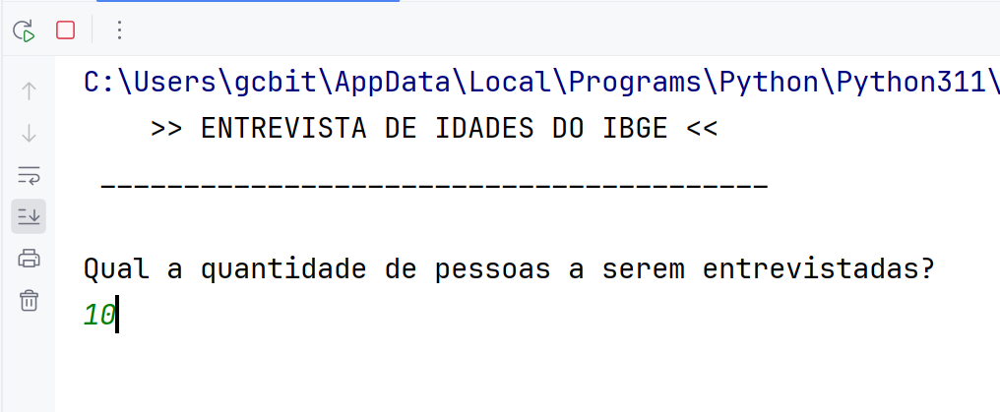
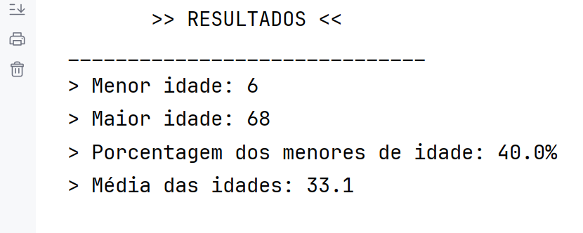
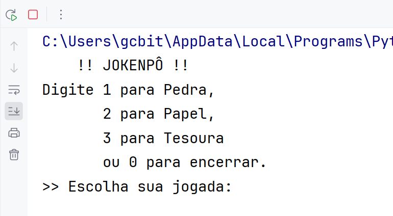
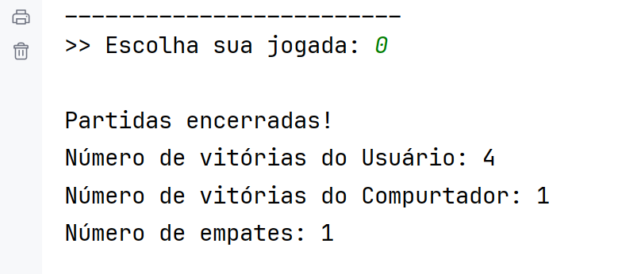

Portfólio: Algoritmos Python
Ítalo é um programador Python básico, além de iniciante em Java e JavaScript, e desenvolveu alguns projetos simples na disciplina introdutória à Lógica de Programação. Aqui temos dois exemplos de algoritmos que foram adaptados por Ítalo.
Link para o repositório no GitHub.
Pesquisa de idades do IBGE
Este algortimo foi adapatdo de um exercício elaborado em Portugol, e faz uma coleta de idades a partir de uma quantidade de dados informada pelo usuário.
Depois de receber esse parâmetro, o programa coleta esse número de idades, calcula algumas estatísticas e as retornam para o usuário:
Jogo de Jokenpô
Este algoritmo foi adaptado de uma aula prática daquela mesma disciplina e simula um jogo de jokenpô contra o computador.
O programa gera as jogadas do computador automaticamente com a função randint() de uma biblioteca Python, armazena as jogadas em listas e, depois que o usuário sai, retorna alguns dados:
